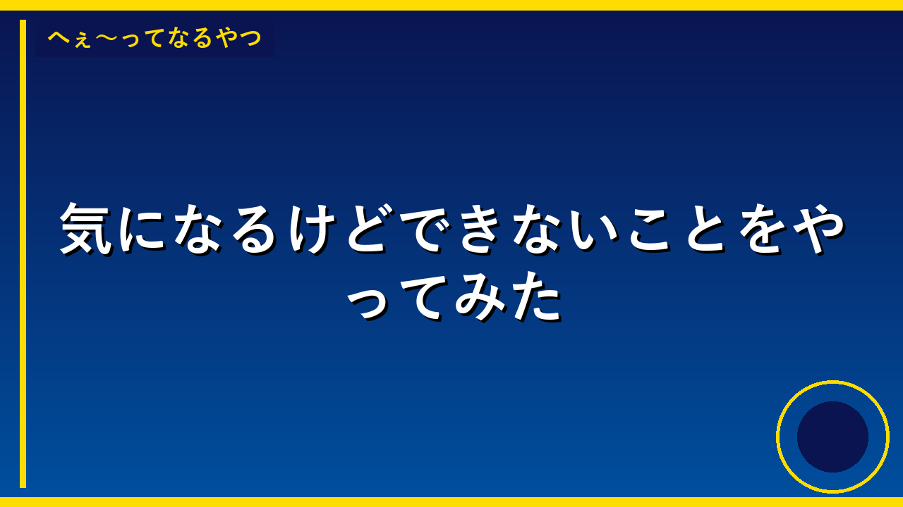

💡 トリビア・雑学
消防車は個人で買える！意外と知らない中古車両の世界
🎥 この内容を動画で見る
官公庁オークションで消防車が80万円から購入可能。普通免許で乗れるタイプもあり、所有自体は合法だという驚きの事実を解説する。
街中で見かける消防車が、実は個人でも購入できることをご存じだろうか。国や自治体が保有していた車両は、一定期間使用された後に「官公庁オークション」と呼ばれる専門サイトで売却される。消防車もその対象で、中古車両なら80万円程度から入札が可能だ。役目を終えた緊急車両は、意外にも一般市民の手に渡ることがあるのだ。
気になるのは法律面だが、消防車の所有そのものに違法性はない。ただし、赤色灯を点灯させたりサイレンを鳴らしたりする行為は、緊急車両以外には認められていないため道路交通法違反となる。あくまで「元消防車」として、装備を使わずに楽しむ範囲であれば問題ないというわけだ。車両サイズによっては普通免許で運転できるものもあり、思ったよりハードルは低い。
維持費は車種にもよるが、月3万円程度が目安とされる。一般的な乗用車に比べるとやや高めだが、特殊車両の所有という趣味としては現実的な範囲だろう。キャンピングカーに改造したり、移動販売車として活用したりと、用途は工夫次第。身近な緊急車両にも、こんな「第二の人生」があることを知ると、街で見かける消防車の見方も少し変わるかもしれない。